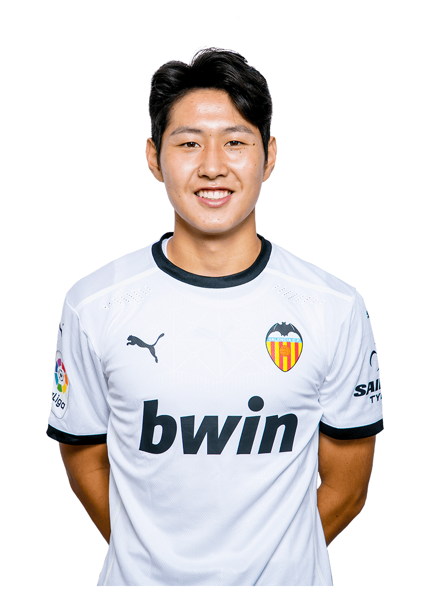
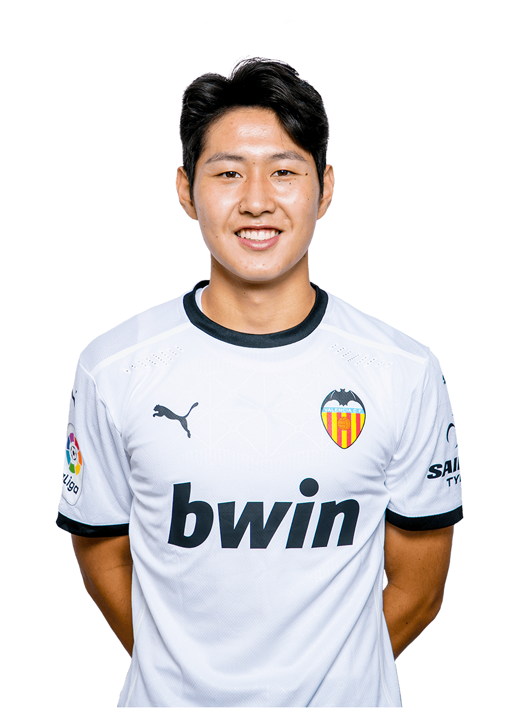
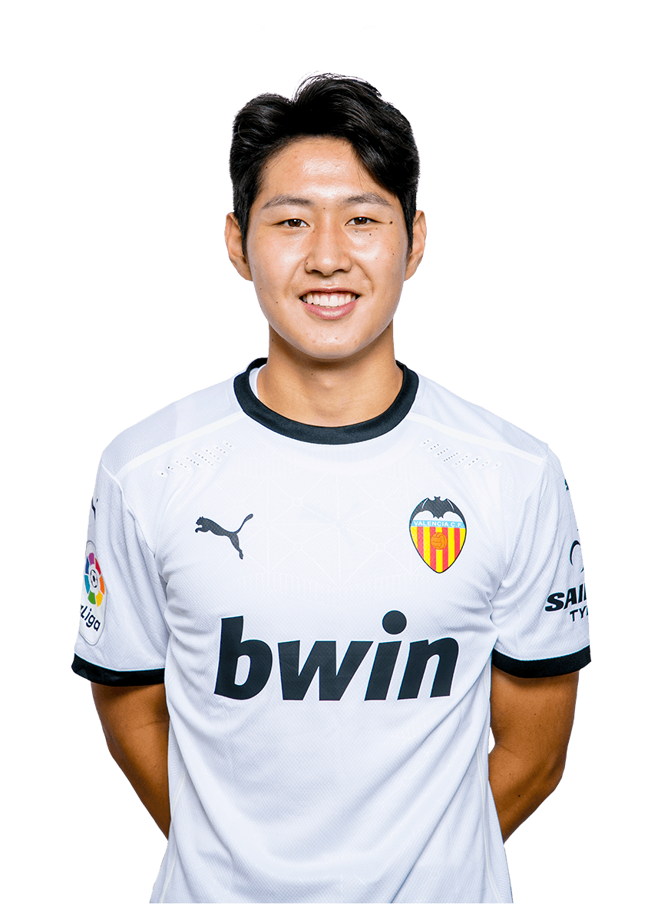
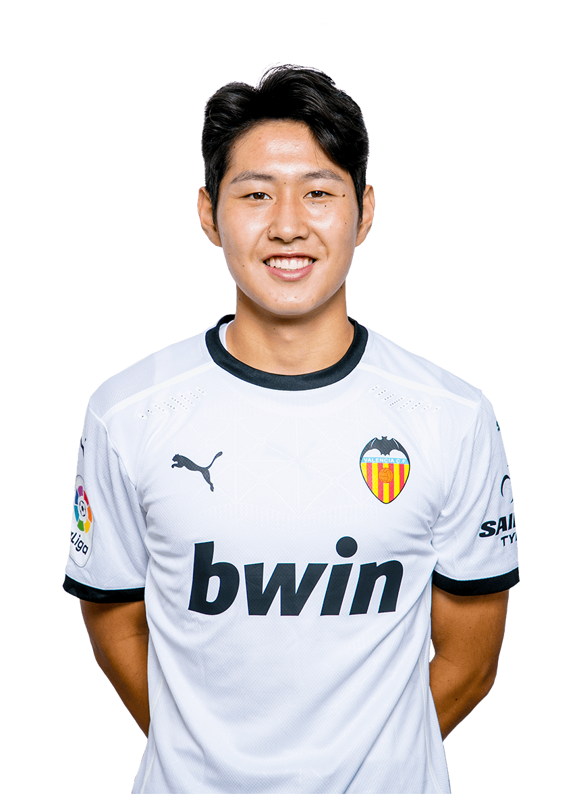

BIOGRAFÍA Jasper Cillessen Futbolista neerlandés nacido en Nijmegen el 22 de abril de 1989. Guardameta internacional con la selección holandesa, Cillessen se inició en el fútbol en las categorías inferiores del NEC Nijmegen antes de recalar en el Ajax de Amsterdam donde jugó 5 temporadas y ganó 3 ligas. Llegó a España para enrolarse en las filas del FC Barcelona, club en el que ha permanecido 3 temporadas en las que ha conquistado 2 Copas del Rey, 2 Ligas y 1 Supercopa de España. EDAD PAÍS POSICIÓN NÚMERO DE CAMISETA FECHA DE NACIMIENTO 31 PAÍSES BAJOS PORTERO 13 22/04/1989
BIOGRAFÍA Jaume Doménech Jugador valenciano nacido en Almenara el 5 de noviembre de 1990. Se inició en el fútbol en el club de su localidad natal, la UD Almenara, bajo las órdenes del ex jugador del Valencia CF José Vicente Forment. Tras pasar por diversas escuelas llegó al Valencia Mestalla en 2013 y en 2015 se incorpora a la plantilla del primer equipo. Debutó en El Molinón con una portentosa actuación ante el Sporting de Gijón en la victoria por 0-1. Es uno de los actuales capitanes del Valencia CF. EDAD PAÍS POSICIÓN NÚMERO DE CAMISETA FECHA DE NACIMIENTO 30 ESPAÑA PORTERO 1 05/11/1990
BIOGRAFÍA Thierry Correia Futbolista portugués nacido en Amadora el 9 de marzo de 1999. Joven y prometedor lateral formado en las categorías inferiores del Sporting de Portugal, donde ha ido creciendo ocupando la banda derecha. Debutó en competición europea ante el Qarabag FK y jugó su primer partido como titular con el Sporting en un amistoso precisamente ante el Valencia CF. Es internacional en todas las categorías inferiores de Portugal con la que ha sido campeón de Europa sub 17 y sub 19. EDAD PAÍS POSICIÓN NÚMERO DE CAMISETA FECHA DE NACIMIENTO 21 PORTUGAL DEFENSA 2 09/03/1999
BIOGRAFÍA Antonio Latorre "Toni lato" Jugador valenciano nacido en la Pobla de Vallbona el 21 de noviembre de 1997. Lato es un producto 100% de la Academia del Valencia CF donde llegó como prebenjamín, y junto con Carlos Soler, fue quemando etapas hasta llegar al primer equipo y ser punta de lanza de la generación del 97. Debutó en partido oficial con 18 años en febrero de 2016 en la UEFA Europa League en la victoria 4-0 ante el Rapid de Viena. Es internacional sub’21 con la selección española. EDAD PAÍS POSICIÓN NÚMERO DE CAMISETA FECHA DE NACIMIENTO 23 ESPAÑA DEFENSA 3 21/11/1997
BIOGRAFÍA Mouctar Diakhaby Jugador francés nacido en Vendôme el 19 de diciembre de 1996. Diakhaby llega al Valencia CF en el verano de 2018 tras irrumpir en el Olympique de Lyon equipo con el que debutó en la Ligue 1 y en poco tiempo, pese a su juventud, acumuló 50 partidos en competiciones oficiales, incluida la UEFA Europa League y la UEFA Champions League. Es internacional sub’21 con Francia. EDAD PAÍS POSICIÓN NÚMERO DE CAMISETA FECHA DE NACIMIENTO 24 FRANCIA DEFENSA 12 19/12/1996
BIOGRAFÍA Eliaquim Mangala Jugador francés de origen congoleño nacido el 13 de febrero de 1991 en Colombes. Cumple en el Valencia CF su segunda etapa tras haber estado cedido la temporada 2016/17 desde el Manchester City. Dio sus primeros pasos en el mundo del fútbol en el UR Namur de Bélgica antes de dar el paso al Standard de Lieja, donde se reconvirtió en central siempre acompañado por su físico portentoso. Ha jugado en FC Porto, Manchester City y Everton FC. Ha sido internacional con la selección absoluta de Francia. EDAD PAÍS POSICIÓN NÚMERO DE CAMISETA FECHA DE NACIMIENTO 29 FRANCIA DEFENSA 12 13/02/1991
BIOGRAFÍA Gabriel Paulista Jugador brasileño nacido en Sao Paulo el 26 de noviembre de 1990. Se inició en el fútbol en el Esporte Clube Vitória, donde jugó 4 temporadas. El balón cambió su vida y la de su familia. Orgulloso de sus raíces, que forman parte de su nombre futbolístico, Paulista dio el salto a Europa en 2013 donde jugó en el Villarreal CF y en el Arsenal FC. En el verano de 2017 llegó al Valencia CF donde se reencontró con Marcelino García Toral, el entrenador que mejor rendimiento ha conseguido de Gabriel. EDAD PAÍS POSICIÓN NÚMERO DE CAMISETA FECHA DE NACIMIENTO 30 BRASIL DEFENSA 5 26/11/1990
BIOGRAFÍA Uros Racic El 13 de junio de 2018, con 20 años, se hizo oficial su fichaje por el Valencia Club de Fútbol de la Liga Santander de España.El futbolista no se lo pensó dos veces a la hora de firmar por el club valencianista. Así que aceptó empezar la temporada con ficha del equipo filial, el Valencia Mestalla del grupo III de Segunda División B, a las órdenes del técnico Miguel Grau. EDAD PAÍS POSICIÓN NÚMERO DE CAMISETA FECHA DE NACIMIENTO 22 SERBIA CENTROCAMPISTA 17 17/03/1998
BIOGRAFÍA Carlos Soler Jugador nacido en Valencia el 2 de enero de 1997. Se inició en el fútbol siendo un niño en los campos de tierra del Bonrepós. Con apenas 7 años se incorporó a la Academia del Valencia CF donde fue quemando etapas y variando su posición inicial de delantero, marcando más de 500 goles, a la de mediocentro. Debutó con el primer equipo en diciembre de 2016 ante la Real Sociedad, y se consolidó en el primer equipo con Voro en el banquillo, anotando 3 goles en la recta final de esa temporada. Es internacional sub’21 con la selección española. EDAD PAÍS POSICIÓN NÚMERO DE CAMISETA FECHA DE NACIMIENTO 23 ESPAÑA CENTROCAMPISTA 8 02/01/1997
BIOGRAFÍA Gonçalo Guedes Portugués nacido en Lisboa el 29 de Noviembre de 1996. Empezó su carrera en el SL Benfica, haciendo su debut profesional en abril de 2014 con 17 años. Después de 11 goles en 63 partidos, ganando 5 títulos, fue traspasado al París Saint Germain, siendo cedido al Valencia en la temporada 17/18 donde fue uno de los máximos asistentes de LaLiga. Se unió definitivamente al Valencia CF en agosto de 2018. Forma parte de la selección nacional portuguesa y jugó el Mundial 2018 en Rusia. EDAD PAÍS POSICIÓN NÚMERO DE CAMISETA FECHA DE NACIMIENTO 24 PORTUGAL CENTROCAMPISTA 7 29/11/1996
BIOGRAFÍA Daniel Wass Jugador danés nacido en Gladsaxe el 31 de mayo de 1989. Se inició en el fútbol en las categorías inferiores del Bröndby IF con el que debutó en competición europea en 19 años. Con 22 años recaló en el SL Benfica, antes de jugar cuatro temporadas en el Evian FC de la Ligue 1 francesa, tres temporadas en el Celta de Vigo y llegar en su madurez futbolística al Valencia CF en el verano de 2018. Ha sido internacional absoluto con la selección de Dinamarca con la que participó en la Eurocopa de 2012. EDAD PAÍS POSICIÓN NÚMERO DE CAMISETA FECHA DE NACIMIENTO 31 DINAMARCA CENTROCAMPISTA 18 31/05/1989
BIOGRAFÍA Manu Vallejo Futbolista español nacido en Chiclana el 14 de febrero de 1997. Gaditano de nacimiento, Manu Vallejo se formó como futbolista en el Cadiz CF donde fue creciendo hasta alcanzar el primer equipo y completar una gran temporada en Segunda División con 8 tantos y estando muy cerca de disputar el play off de ascenso a Primera. Es internacional con la selección española sub 21 con la que se proclamó campeón de Europa el verano pasado. EDAD PAÍS POSICIÓN NÚMERO DE CAMISETA FECHA DE NACIMIENTO 23 ESPAÑA DELANTERO 21 14/02/1997
BIOGRAFÍA Kevin Gameiro Futbolista francés nacido en Senils (Oise) el 9 de mayo de 1987. Goleador de larga trayectoria que debutó en la Ligue 1 con 18 años en el Racing Estrasburgo, de donde pasó al Lorient y al Paris Sanint Germain, con el que ganó la Ligue 1 en 2013. Llegó a LaLiga en el verano de 2013 y en España ha conquistado 4 títulos de la UEFA Europa League con el Sevilla FC y el Club Atlético de Madrid. En el verano de 2018 llegó al Valencia donde anotó su primer gol en la victoria ante la Real Sociedad en septiembre de 2019. Ha sido internacional absoluto con la selección de Francia. EDAD PAÍS POSICIÓN NÚMERO DE CAMISETA FECHA DE NACIMIENTO 33 FRANCIA DELANTERO 9 09/05/1987
BIOGRAFÍA Lee Kang-In Con solo 11 años llegó Kang In a la Academia del Valencia CF, a donde se habían trasladado sus padres desde su Corea del Sur natal. Pronto deslumbró por sus habilidades y su desparpajo en el terreno de juego que le ha permitido adelantar plazos y jugar siempre en categorías superiores a su edad. Debutó con gol en el primer equipo en el Trofeo Naranja ante el Bayer Leverkusen y en octubre le llegó el debut en partido oficial con el primer equipo partido de Copa ante el Ebro, y en enero de 2019 se incorporó al primer equipo de forma definitiva a solo unos días de cumplir los 18 años. EDAD PAÍS POSICIÓN NÚMERO DE CAMISETA FECHA DE NACIMIENTO 19 COREA DEL SUR CENTROCAMPISTA 20 19/02/2001
BIOGRAFÍA Maxi Gómez Delantero uruguayo nacido en Paysandú el 14 de agosto de 1996. Siempre con el gol en la cabeza Maxi se inició en el fútbol en el Club Atlético Litoral, desde donde se trasladó a Montevideo para enrolarse en las filas del Defensor Sporting donde anotó 31 goles en 52 partidos. Dio el salto a Europa y repitió cifras goleadoras en el Real Club Celta de Vigo con 31 goles en dos temporadas. Es internacional con la selección absoluta de Uruguay. EDAD PAÍS POSICIÓN NÚMERO DE CAMISETA FECHA DE NACIMIENTO 24 URUGUAY DELANTERO 22 14/08/1996


 



 
